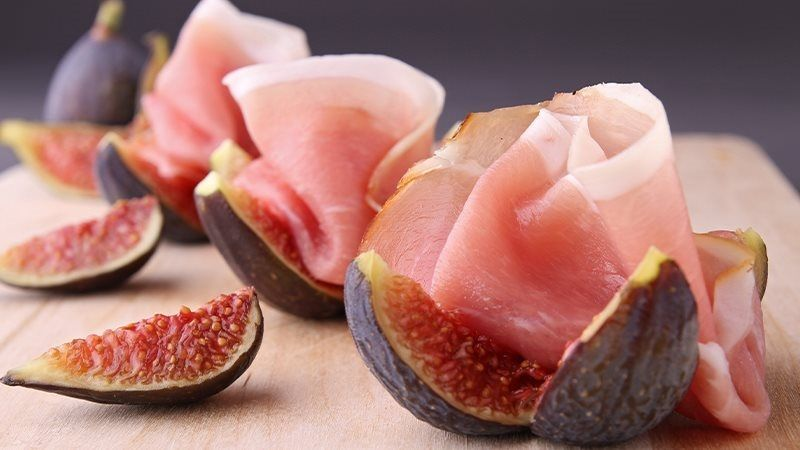

Prosciutto con Fichi

Description
Cured hams in the region of Parma have the fame of being the best of the country. Prosciutto is an excellent starter dish if served with fresh figs.
Ingredients
- 12 thin slices of prosciutto
- 8 green or black figs
- loaf bread and butter without salt
Steps
- Separate the ham slices and display them decoratively in spiral on a plate.
- Clean the figs with a damp cloth. Cut them in 4 in a way that the base holds together the 4 parts. If the skin is tender it can be eaten with the interior.
- Display the figs above the ham slices. Serve them accompanied by bread and little butter balls.